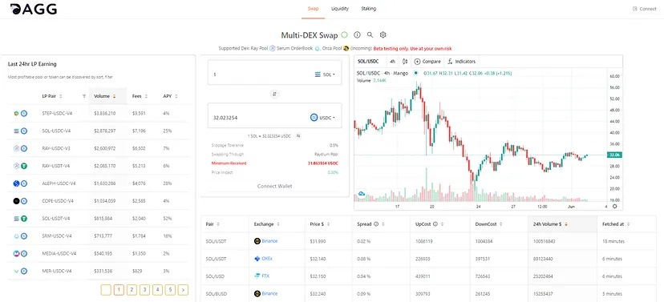
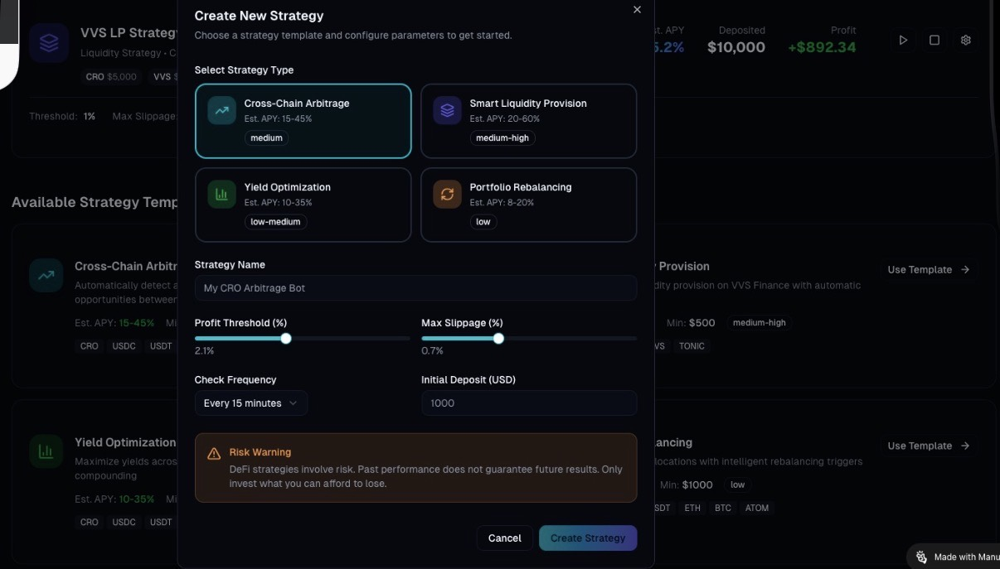
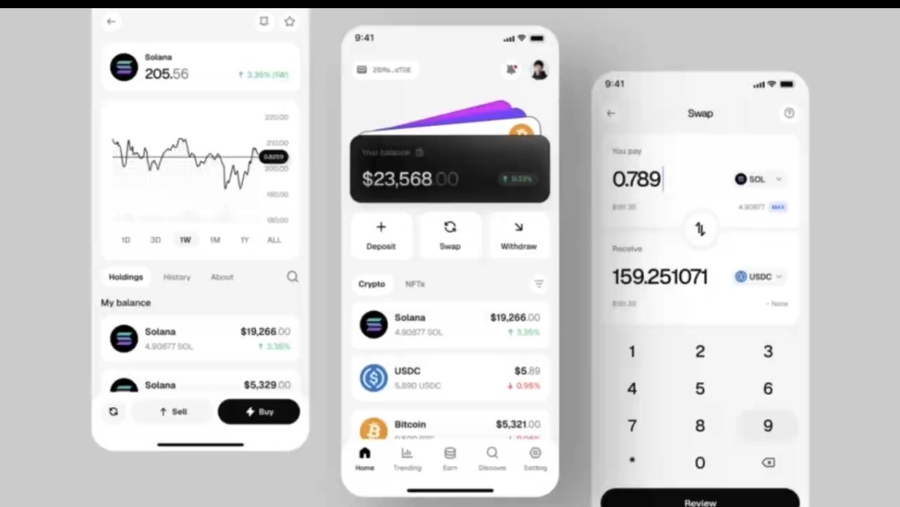
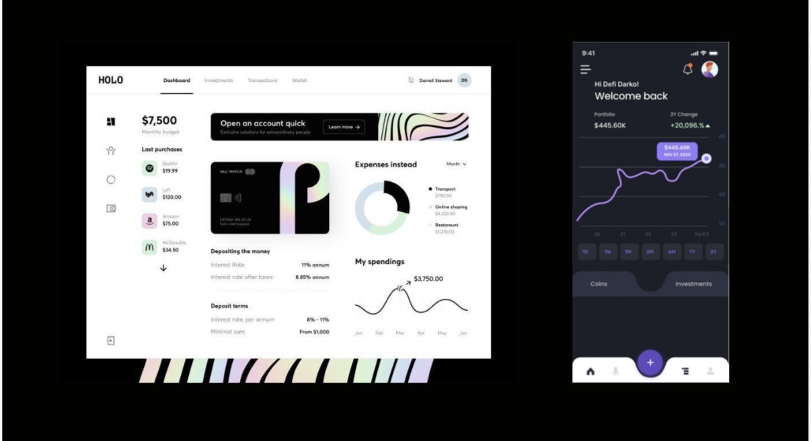

AI + Blockchain Infrastructure for Private Market Liquidity
Sydney-based AI Tech Lead, AI Agent Engineer, and Data Architect with 15+ years of experience leading secure, real-time data platforms and agentic AI systems across finance, healthcare, telecom, and Web3.
Hands-on with agent harness engineering, MCP-based tool integration, RAG pipelines, multi-agent collaboration, LLM fine-tuning, and production workflows across Claude, GPT, Gemini, Llama, and open-source models.
From private opportunity listings to a private market operating system.
Private market platforms do not win by simply listing opportunities. They win by building an ecosystem around asset discovery, investor education, community capital, fundraising support, trust infrastructure, and eventual liquidity.
FloatX can become a multi-asset private market ecosystem.
FloatX already spans private trading, unicorn trading, funds, debt, property, capital raising, virtual wallet funds, FX, and blockchain services. Each asset category should have its own investment narrative, risk explanation, liquidity logic, and education path.
- Deal pages should become investor decision pages, not only information pages.
- AI can personalize education by investor type, language, jurisdiction, and asset class.
- BD workflows can help founders activate customers, users, alumni, communities, and strategic partners.
- Blockchain should be positioned as auditability, workflow, settlement, and ownership-record infrastructure.
I help turn fragmented financial opportunities into usable trading infrastructure.
For FloatX, that means connecting AI education, community-led deal discovery, private-market trading UX, wallet settlement, and blockchain verification into one coherent product workflow.
DAGG Trade: liquidity aggregation and trading dashboards.

What it focused on
- Low-slippage trading
- Multi-protocol liquidity integration
- One-click price and cost discovery
- One-stop trading dashboard
- Better routing across fragmented liquidity
Why it matters to FloatX: private-market liquidity is fragmented across investors, issuers, funds, jurisdictions, currencies, and settlement processes.
LiquidAI: AI should live inside the investor workflow.

AI is most useful when it reduces friction in real decisions, not when it sits beside the product as a generic chatbot.
- Opportunity summaries
- Investor suitability explanations
- Asset comparison
- Deal memo generation
- Risk and liquidity explanation
- Sales team investor matching
Rollups Wallet: blockchain UX for mainstream users.


FloatX users should not need to understand blockchain to benefit from it. The product experience should translate infrastructure into trust.
- Clear ownership records
- Verifiable transaction history
- Safer settlement flows
- Transparent status updates
- Wallet and FX flows that feel familiar
- Compliance-friendly auditability
Education is not a marketing add-on. It is trust infrastructure.
For private assets, investors need deal-specific guidance on risk, liquidity, valuation, settlement, documents, and suitability. FloatX can go further by making this education personalized, multilingual, and embedded directly into each opportunity page.
- Explain this opportunity for a new private-market investor.
- What are the key risks, liquidity constraints, and exit scenarios?
- What documents should be reviewed before investing?
- How does this compare with public market alternatives?
- What kind of investor profile may be suitable for this opportunity?
Private market access can be strengthened by community capital.
FloatX can complement traditional high-net-worth and institutional channels with founder-led communities, AI and Web3 networks, fintech operators, professional groups, customers, users, alumni, and strategic partners.
- Founders bring customers, users, and early supporters into an education-first investment journey.
- AI, Web3, fintech, and cross-border founder communities become early deal discovery pools.
- Invite-only roundtables, newsletters, and demo days help build trust before transactions.
- Through NextGenius and Sydney AI/Web3 networks, I can help test this channel for FloatX.
Position blockchain as workflow, auditability, settlement, and ownership records.
The market clearly wants more accessible and liquid private assets, but private-company token exposure is sensitive. FloatX can take the stronger path: use blockchain to make private-market workflows more trustworthy without making speculative tokenization the core message.
- Blockchain as the record layer for transaction and ownership workflows.
- Wallet as a familiar settlement and funds-status experience.
- Smart contracts as approval, transfer, and evidence workflows.
- Tokenization as long-term optionality, not a short-term headline.
Every opportunity page should become an investor decision page.
Decision support
- AI deal memo
- Risk summary
- Comparable valuation context
- Liquidity notes
- Exit scenario explanation
Workflow support
- Investor Q&A
- Document checklist
- Suitability prompts
- Wallet and settlement explanation
- Post-trade verification records
Turn repeated sales and investor questions into reusable product assets.
FloatX can give BD teams a consistent toolkit for founder conversations, investor education, liquidity explanation, and regulatory-safe product wording.
- Investor-facing and founder-facing decks
- AI-generated FAQ and objection handling
- Liquidity, settlement, and wallet explanation templates
- Founder listing assistant for materials, narrative, and Q&A preparation
- Community feedback sessions for AI, Web3, fintech, and cross-border opportunities
Months 1-6: FloatX Private Market Intelligence Pilot
A 6 months plan can translate this strategy into a working prototype and BD-ready materials through a month-by-month build and validation cadence.
Month 1
- Foundational research, model design, and first AI deal memo for private-market flow.
Month 2
- Education Q&A content for risk, liquidity, valuation, settlement, and investor clarity.
Month 3
- Founder listing assistant and narrative support for offering materials and FAQs.
Month 4
- BD enablement pack: slides, objection handling, workflows, and consistent messaging.
Month 5
- Wallet, settlement, and post-trade verification integration for transaction trust.
Month 6
- Pilot validation, community feedback session, and BD-ready handoff materials.
Months 7-12: Scale, standardize, and commercialize the pilot
After pilot validation, the next phase focuses on expanding coverage, automating workflows, and preparing a repeatable commercial product.
Month 7
- Analyze pilot results, baseline KPIs, and identify core product gaps.
Month 8
- Refine AI deal memo and Q&A flows for scalability across asset classes and investor segments.
Month 9
- Automate listing assistant and BD pack generation with reusable templates and APIs.
Month 10
- Build production-ready settlement, wallet, and verification workflows for repeat transactions.
Month 11
- Run partner pilots, pilot-to-product transition tests, and investor adoption pilots.
Month 12
- Package the pilot into a commercial offer with go-to-market materials, pricing, and onboarding playbooks.
Production-Ready Investor Wallet
A trusted settlement account for private market investors — combining funds, entities, ownership records, settlement workflows, and blockchain-ready auditability.
Investor Account Layer
Manage individual, company, trust, SMSF, and fund entity profiles with KYC/KYB and investor status.
Wallet Balance & Settlement
Show available balance, locked funds, pending transactions, completed settlements, deposits, withdrawals, and FX status.
Ownership & Records
Track private asset holdings, transaction confirmations, document records, and ownership evidence.
Security & Recovery
Support MFA, passkeys, device binding, transaction limits, role-based approval, account recovery, and audit logs.
Blockchain-Ready Infrastructure
Use blockchain as a trust and record layer for settlement events, ownership evidence, document hashes, and permissioned transfers.
Admin & Compliance Operations
Support AML review, manual approval, reconciliation, settlement exceptions, reporting, and operational audit trails.
Building across AI, blockchain, community, and private-market UX.
The strongest contribution would be hands-on technical leadership across product prototyping, agentic AI workflows, data architecture, BD enablement, and investor-facing transaction experiences.
- Prototype AI investment workflows that support discovery, research, and decision-making.
- Design private-market dashboards around education, liquidity, market depth, and investor intent.
- Improve wallet, FX, settlement, and post-trade verification experiences.
- Build community-led feedback channels through AI, Web3, fintech, and cross-border networks.
- Convert repeated sales and investor questions into scalable product workflows.